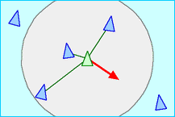
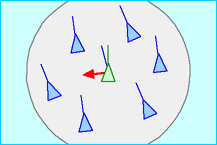
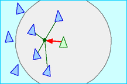

This project involved the use of pygame and python to implement a 2d boid simulation. Boids are essentially a common way to implement emergent behavior. This essentially means that there is a mathematical system defined that rely's on the interaction of individual agents. You can read more about boids in the following wikipedia here
The main components of a BOID program / algorithm can be broken down into three main parts. Essentially each individual agent adheres to three main rules.
Seperation
this rule essentially tells the agents to avoid each other. This rule encapsulates things such as distance between agents as well as adhereance to the formation. each agent / boid can detect other boids within a seperation radius. Then each agent will calulate a vector pointing away from its neighbor and change its velocity accordingly.
Alignment
This rule essentially dictates the flow of the swarm of the boids. It's what makes the boids swarm and move as one formation. This is done via identifying neighbors within a defined radius and then calculating the average heading of each neighbor. Once calculated the agent will move towards that heading, adjusting its velocity.
Cohesion
This rule makes the boids stick together. It defines how tight the formation is. This is done by calculating a center of mass of the formation / groups of neightbors and then adjusting the velocity vector to move towards it.
for the purpose of this project I wanted to experiment with implementing this behavior in a simple simulation. The following video is showing a project that uses pygame to make a 2d boid simulation. The code can be found at the following repo on my github. I also implemented / played around with obstacle collision detection and avoidance.
I'm not really sure why but for whatever reason the behavior of BOIDS has always interested me. I plan to explore this concept in more depth in the future. It would be cool to see this behavior implemented in 3d. It would also be cool to implement this with a shader of some sort since I have some loose affinity wiht opengl.